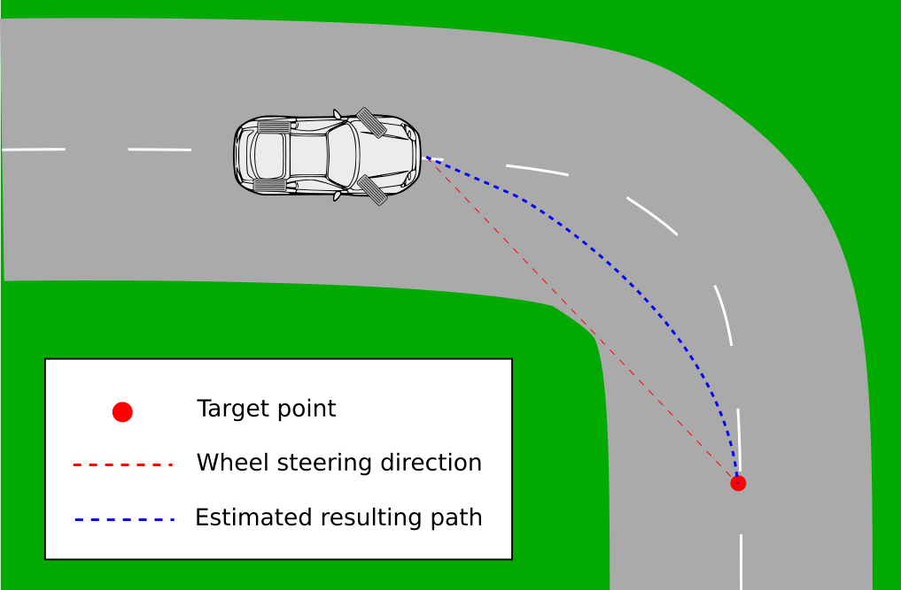

This is the fifth chapter of a tutorial for building an AI agent for the racing game TORCS. In this chapter, we improve the steering angle of our AI Agent. We will use an heuristic approach to increase the radius of our car's path in turns, thus our speed as well.
Utility classes
First, let's introduce two classes to simplify our calculations in computing steering angles and specific distances.
The Vector Class
The first utility class V2D, represent a two dimensional vector. It implement
useful operations that can be applied to a vector such as: addition, substraction,
scalar multiplication and dot product. Additional implemented functions are
normalization, rotation around a center and computing the length of the vector.
Let's create a folder named linalg within our project. Within this folder create a file named v2d.h. Implement the following listing in the created file.
The Straight Class
The second utiliy class Straight, represent some kind of
Euclidean vector.
We will use it to find intersection points among straights, and distances between
points and straights.
As you might see the Straigth class contains two Vector2D. One hold a point
on the straight and the other the direction.
Let's create a file named straight.h within the linalg folder. Add the following code in the newly created file.
Improving the steering
The new steering approach we will adopt can be explained as follow: from driving in the middle of the track, we designate a target point ahead of the car toward which we point the wheels. This result in greater turn radius of the car. The figure below give an idea of what goes on.

Although the overall path of the car will improve greatly, we have to note that we are still far away from a good trajectory, since we cannot take a turn with the biggest possible radius, starting and ending onthe middle of the track.
Finding the target point
(Note the difference between the look_ahead variables)